Causal startup before factor release


Roof charts use the four original v5 choices on the named recordings. Each independent location plot uses its own measured or simulated queries. Unmeasured attempts remain visible in counts and tables.
Roof · Fitted calibration PDFRoof · Fitted calibration dataTransfer · Fitted calibration PDFTransfer · Fitted calibration dataRoof · Zero calibration PDFRoof · Zero calibration dataTransfer · Zero calibration PDFTransfer · Zero calibration data


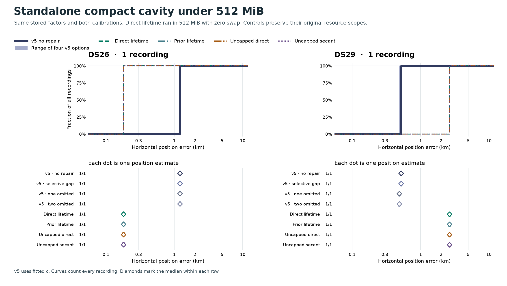
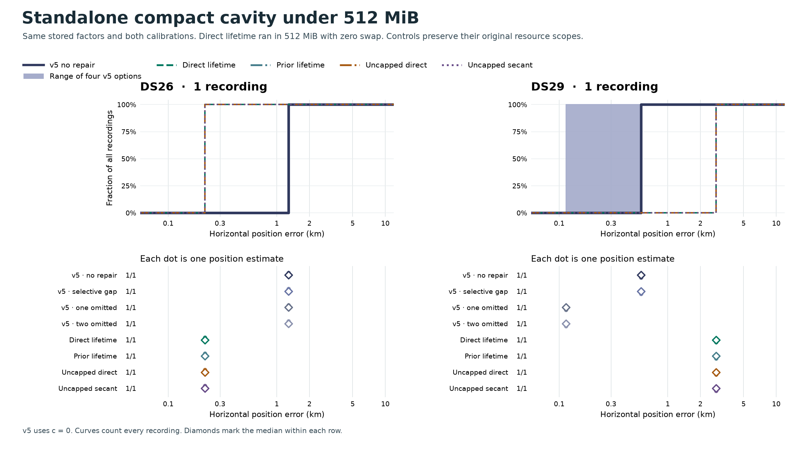


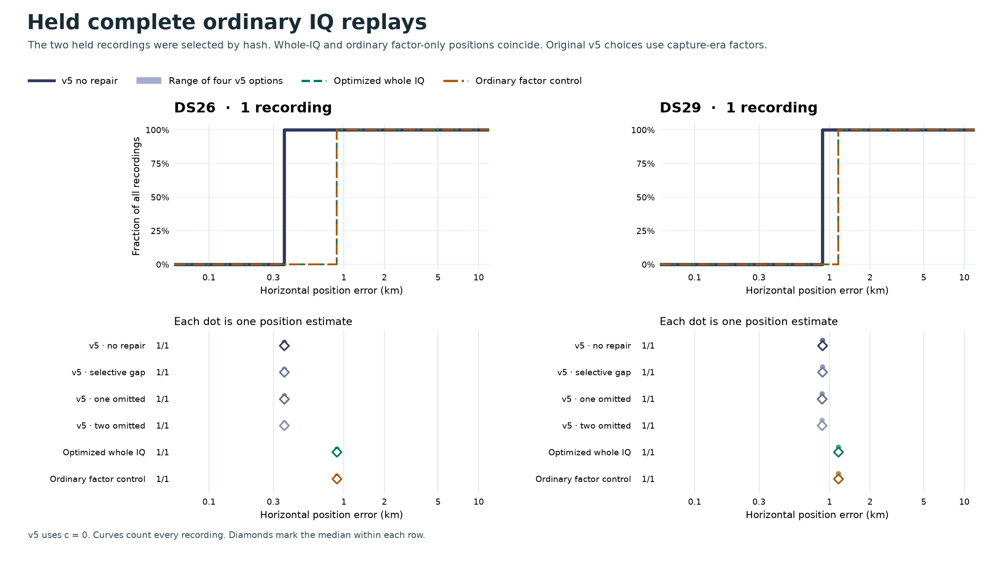


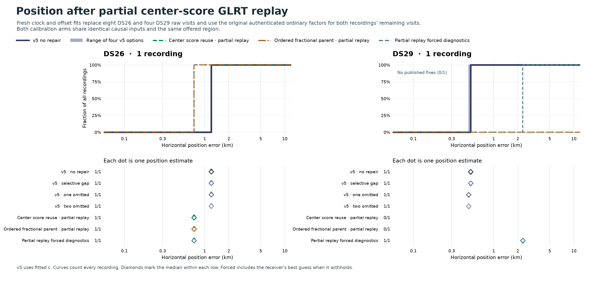

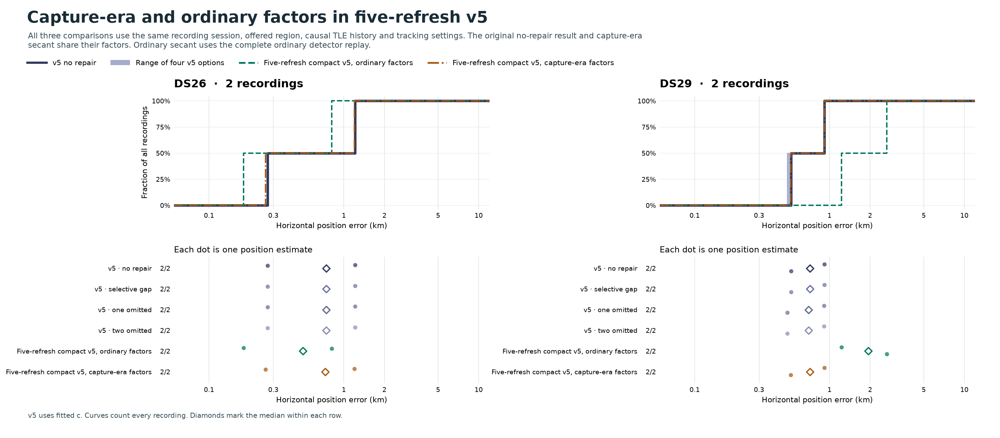


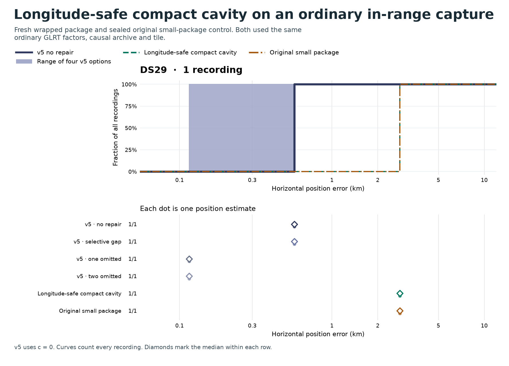
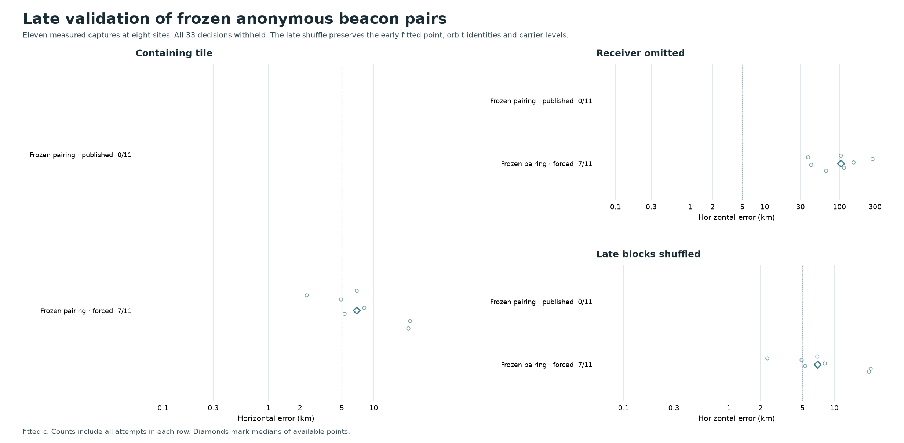

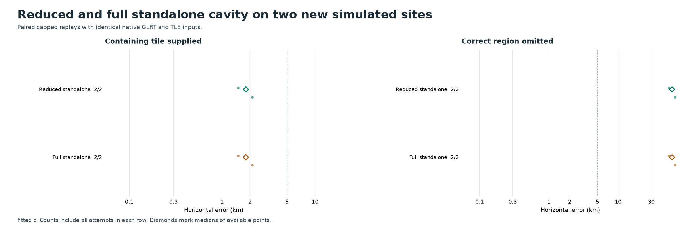

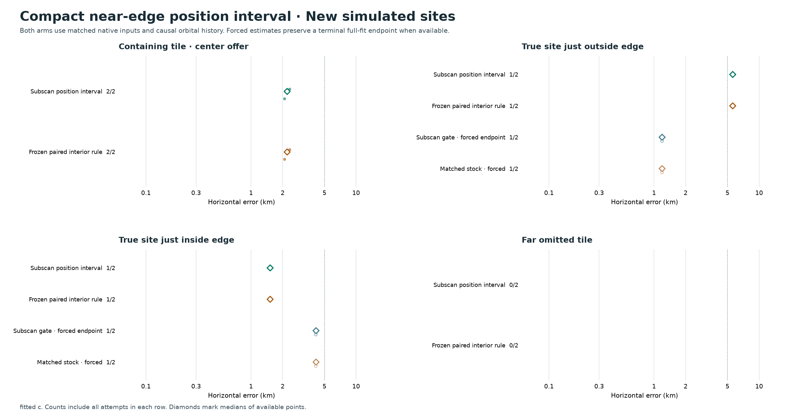
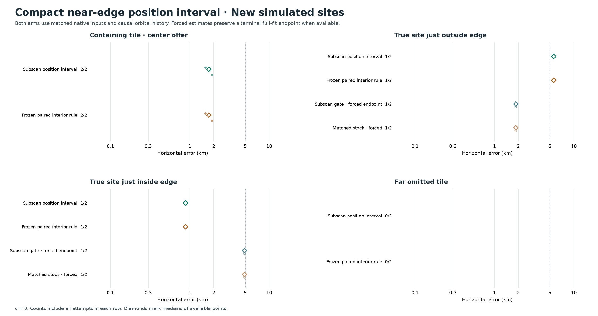


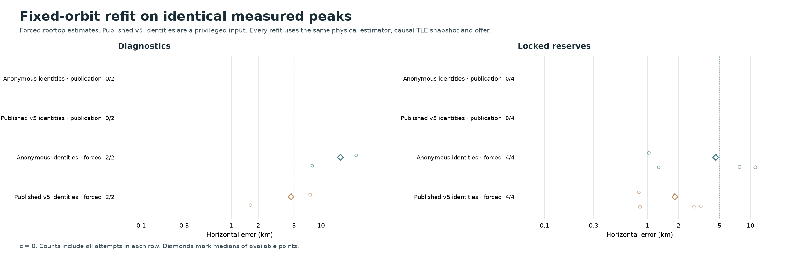
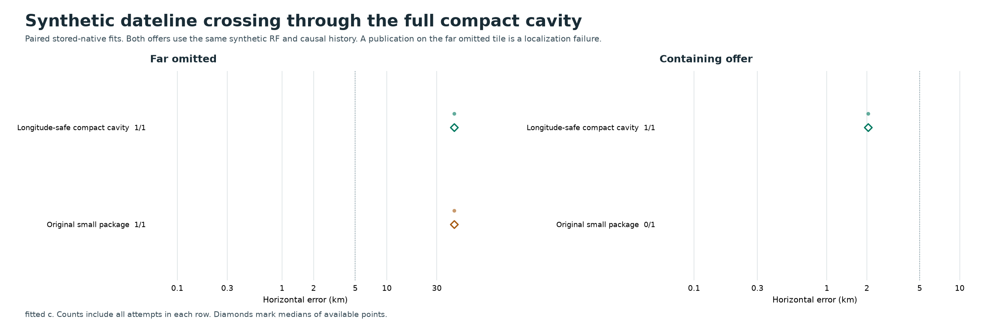
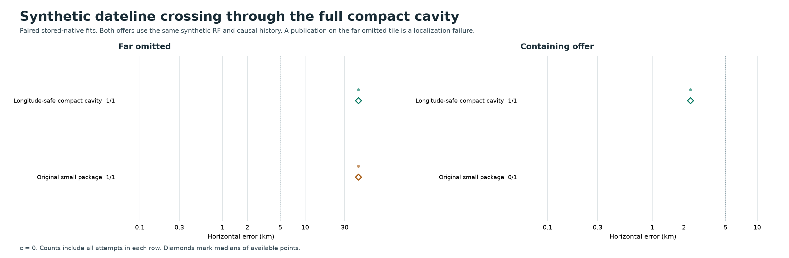
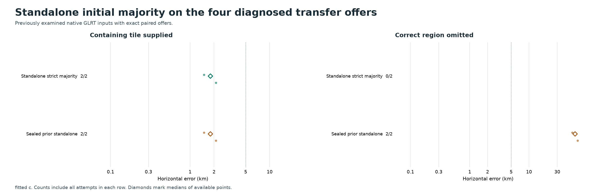
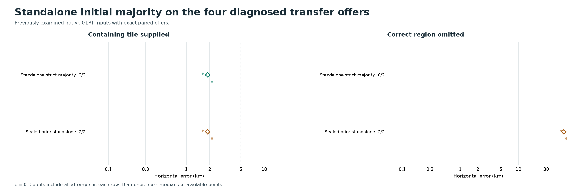
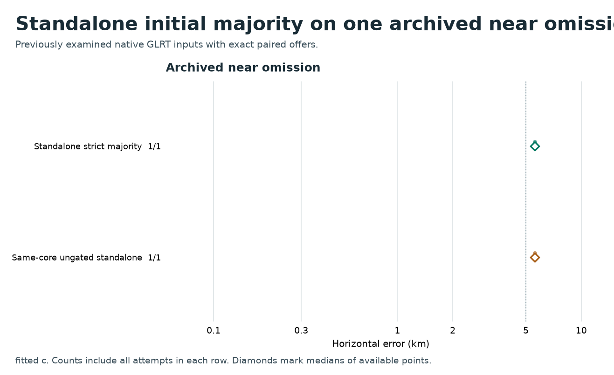
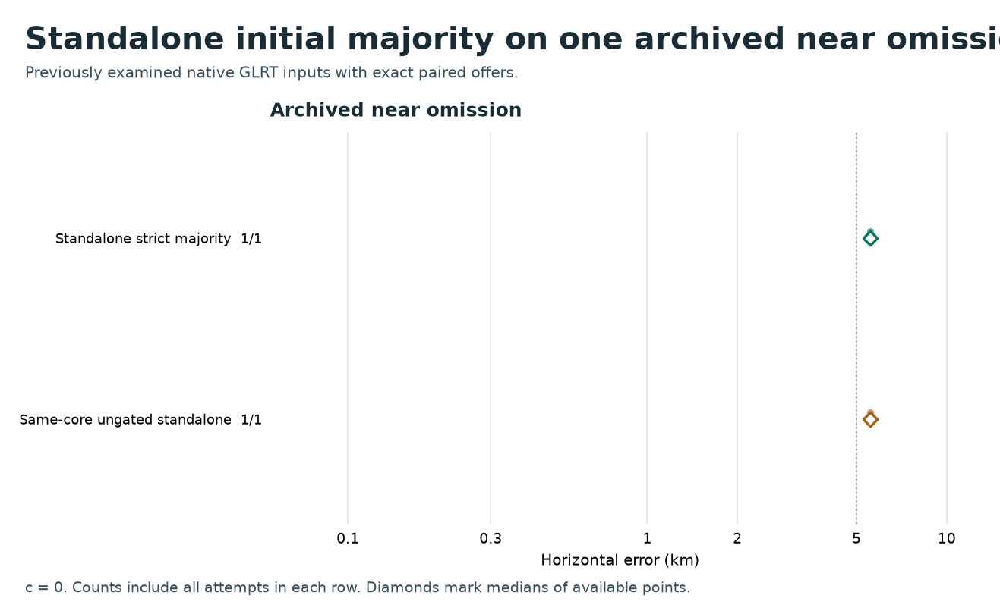